Petrov argues coding agents fail on unstructured physical data (video, sensor, robot telemetry) for structural reasons a bigger model won't fix, and gives a concrete architecture (Pydantic schemas over a warehouse, incremental checkpoint...
This traces Petrov's own example end to end: raw video turned into a Pydantic-modeled warehouse, run through a parallel execution engine that checkpoints instead of rerunning from scratch on failure (ours).
“Anthropic published that accuracy for data projects on their agents is only 21% until you add specific data harnesses to them and provide context.”
said at 00:30“OpenAI published a whole layers of context, six layers of context in order to make the data agent to work.”
said at 00:45“if you analyze thousands of videos, right? It goes to like a million million scale and if you go to deeper to the objects, it can easily it can easily be multiplied by 10 20 even hundreds.”
said at 11:02“It's really sad when you process uh, hundreds of thousands of files and it fails in the middle because of bugs or API call issue and you want to execute everything from scratch, right?”
said at 18:18“Incremental update and data checkpoints it's a must-have in this data world.”
said at 18:48“In data, there is usually only one way and only one current correct answer uh to solve the problem.”
said at 19:51“instead, you need to organize layer of meta information over like data sets uh or tables around this uh raw data uh that could answer these questions very quickly.”
said at 20:22“Their intuition pushes them in a wrong direction because laws of physics changes.”
said at 26:42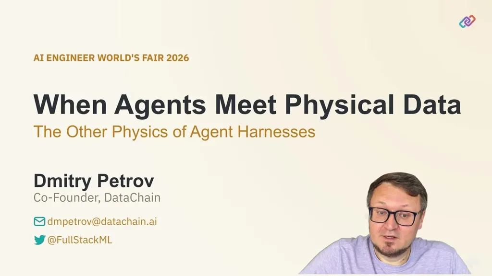
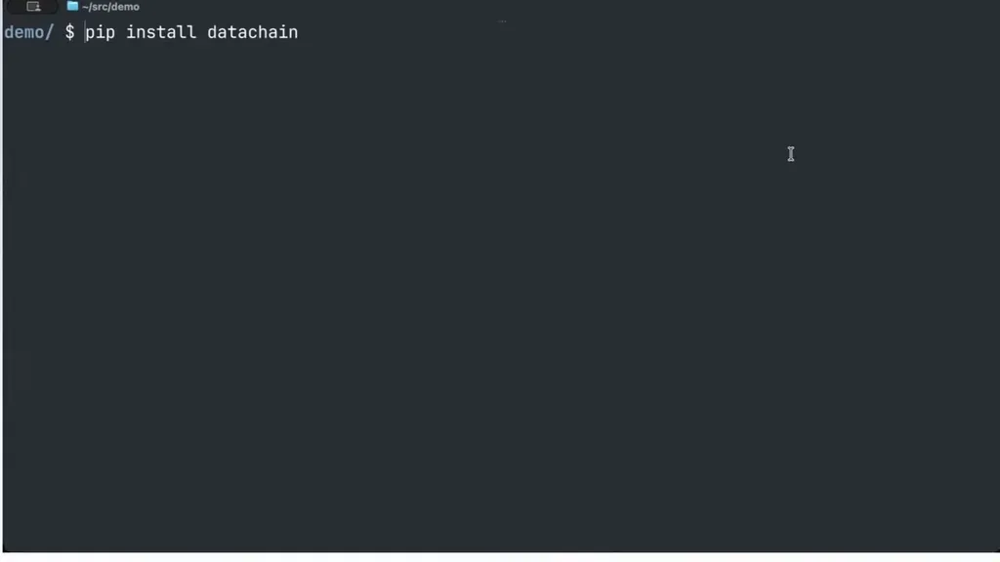
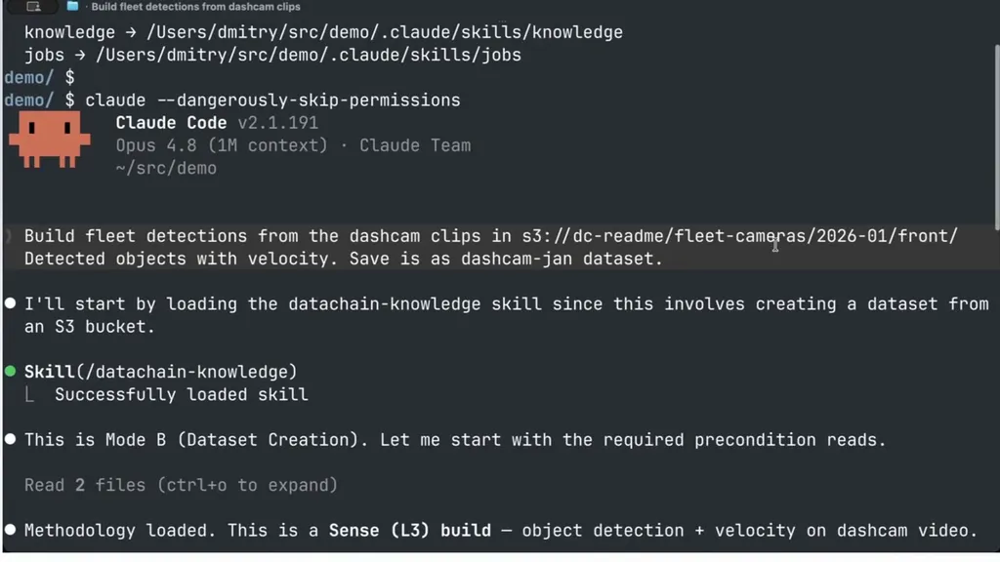
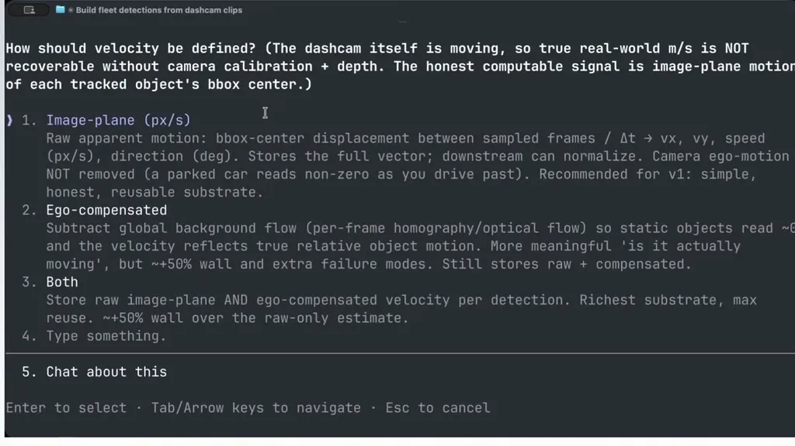
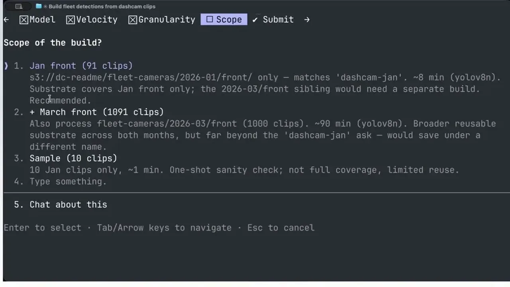
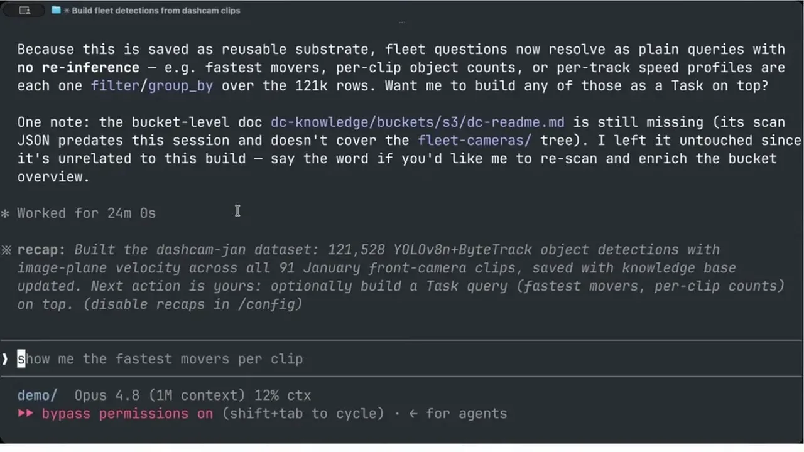
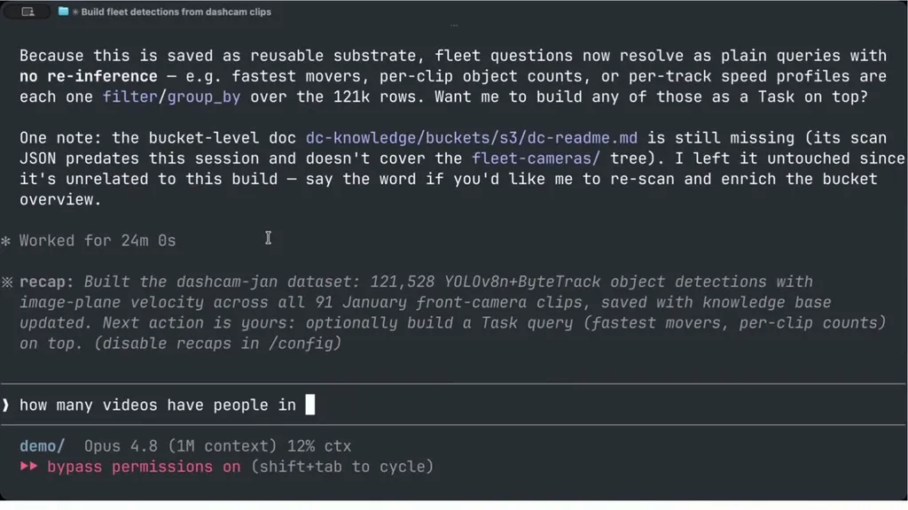
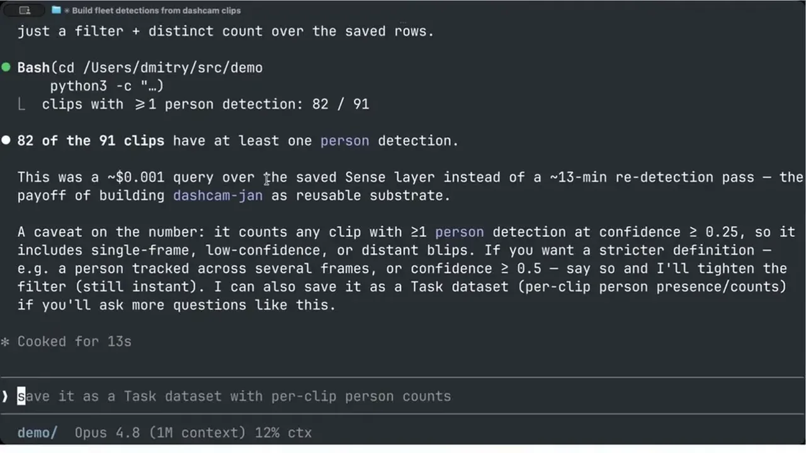
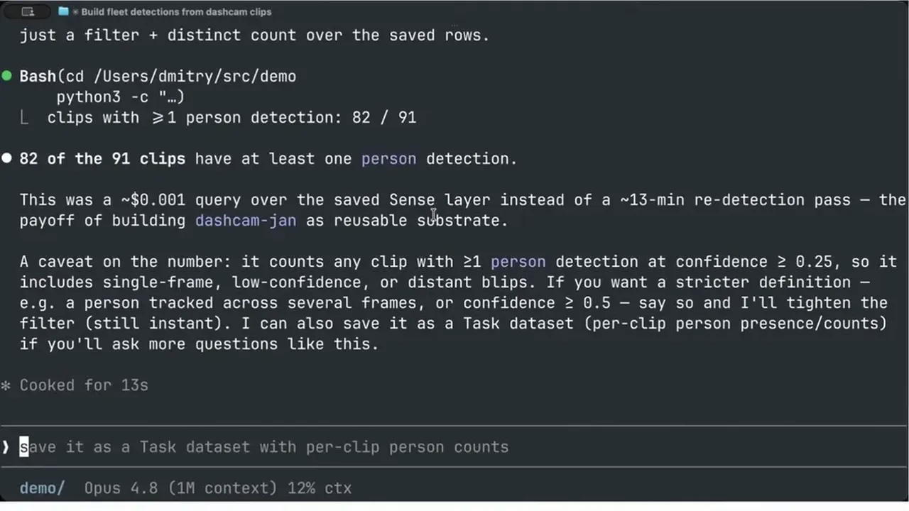
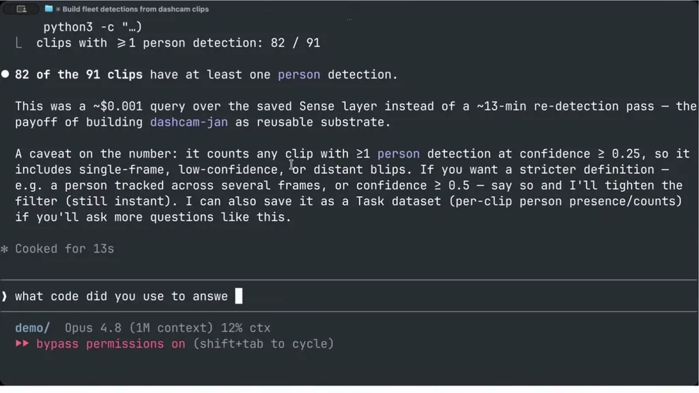
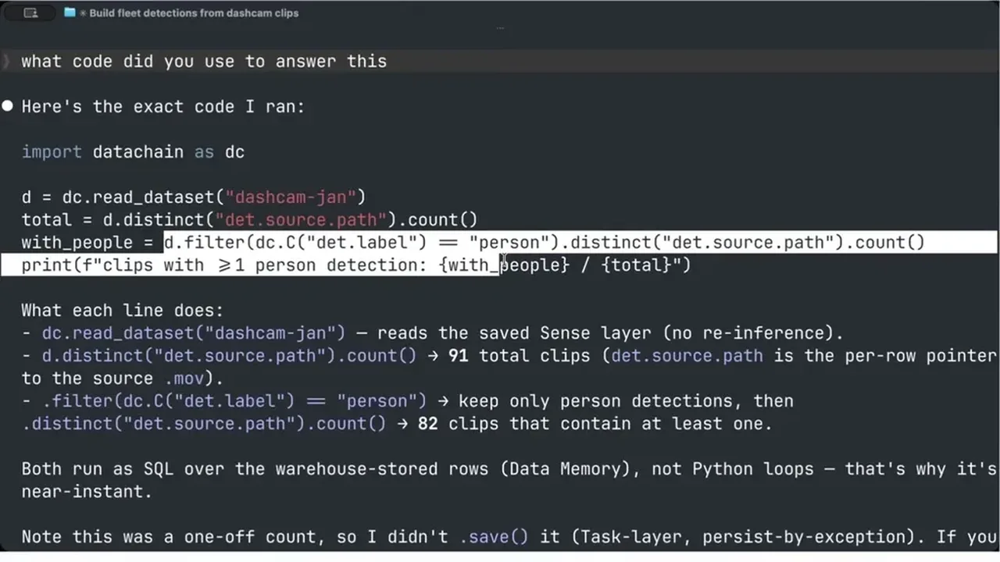
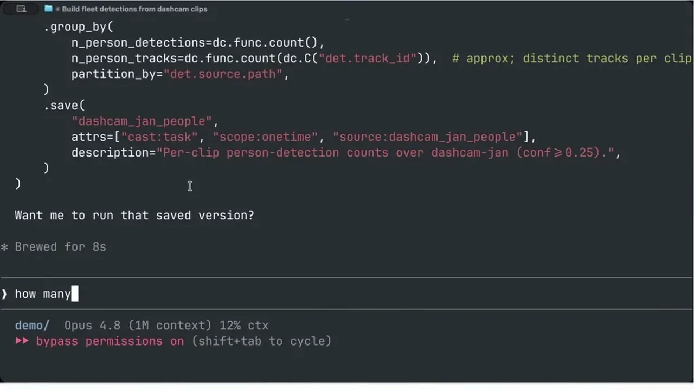
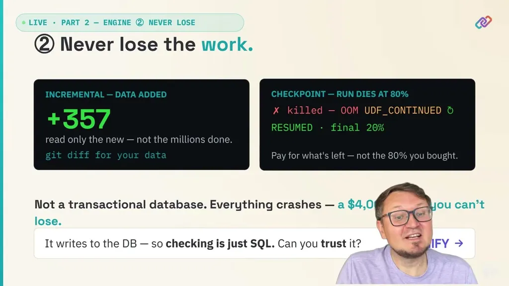
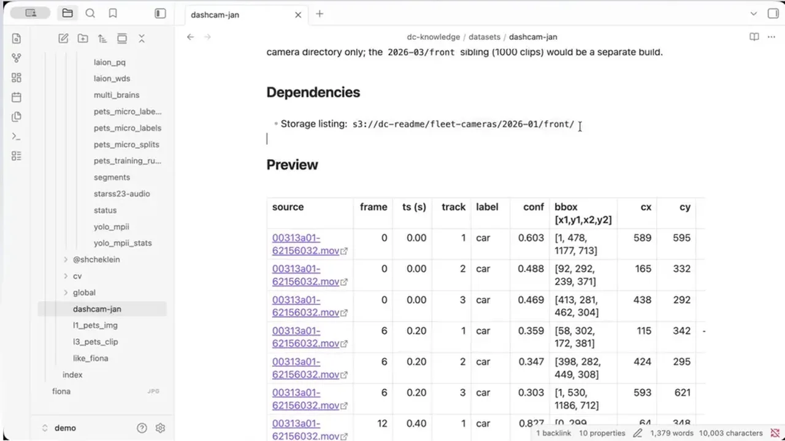
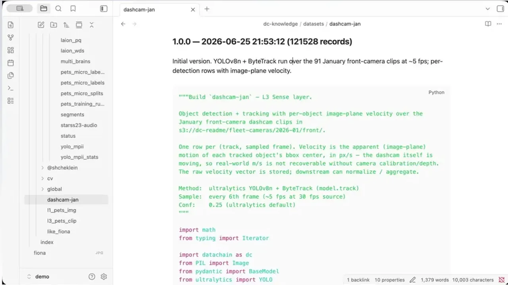
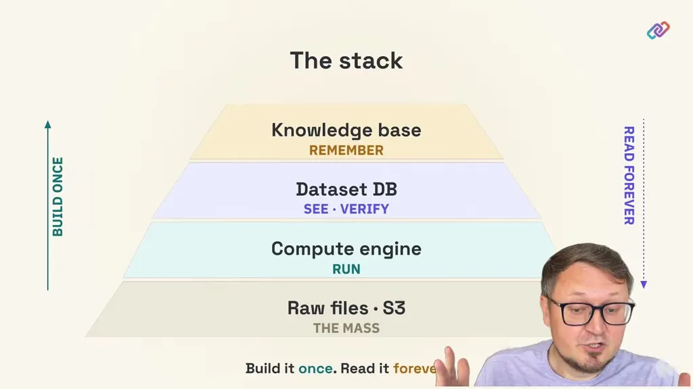
| Stance | Claim | t |
|---|---|---|
| asserts | Anthropic found agent accuracy on data projects is only 21% without added data harnesses and context. | 00:30 |
| asserts | OpenAI needed six layers of context to get their data agent working. | 00:45 |
| warns | Object counts explode nonlinearly as video scale increases, multiplying further at the object-detection level. | 11:02 |
| warns | Failing mid-run on a large file processing job without recovery means losing all the compute already spent. | 18:18 |
| recommends | Incremental updates and checkpoints are mandatory infrastructure for unstructured data processing. | 18:48 |
| asserts | Unlike software, which has many valid solutions, a data question typically has only one correct answer. | 19:51 |
| recommends | Teams should build a reusable metadata/dataset layer instead of re-running expensive ad hoc scripts on raw data for every question. | 20:22 |
| warns | General-purpose coding agents misfire on physical data because their built-in assumptions don't hold in this domain. | 26:42 |
Machine-readable copy embedded in this page (script#ontology) and in the corpus ontology.